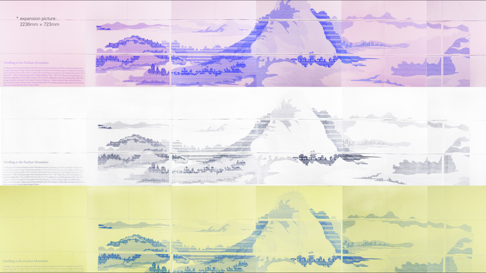

//// Dwelling in the Fuchun Mountains ////





* stone relief redesign
* keywords: stone relief patten redesign
* 2014
* indivisual work
* picture: 241mm * 279.5mm
Dwelling in the Fuchun Mountains is one of the top ten ancient masterpieces of China, created by Fuyang native Huang Gongwang. He began work on the painting in 1348 and took about three years to complete it then presented it to a Taoist priest as a gift in 1350. A century later, the painting was acquired by the Ming dynasty painter Shen Zhou (1427–1509). During the reign of the Chenghua Emperor (1465–1487), Shen Zhou sent the painting to an unnamed calligrapher to be inscribed. However, the son of this calligrapher seized the painting which, after a few changes of hands, reemerged on the market for sale at a high price. Unable to afford it, there was nothing Shen Zhou could do except to make a copy of the painting himself. This imitation by Shen Zhou has become the most well-known and acclaimed copy among all others.
- Created By Cherrie Jiang -
- 09 / 2016 -